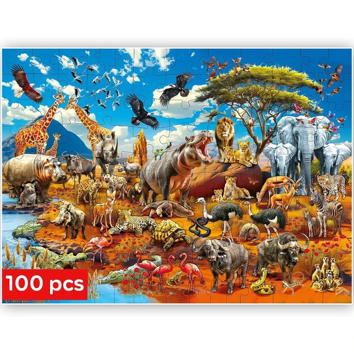
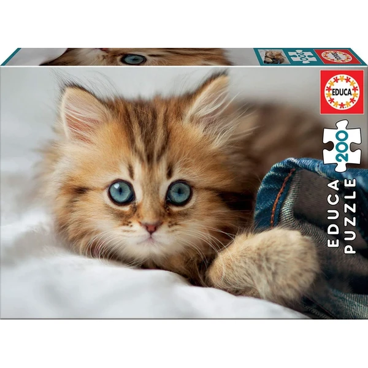
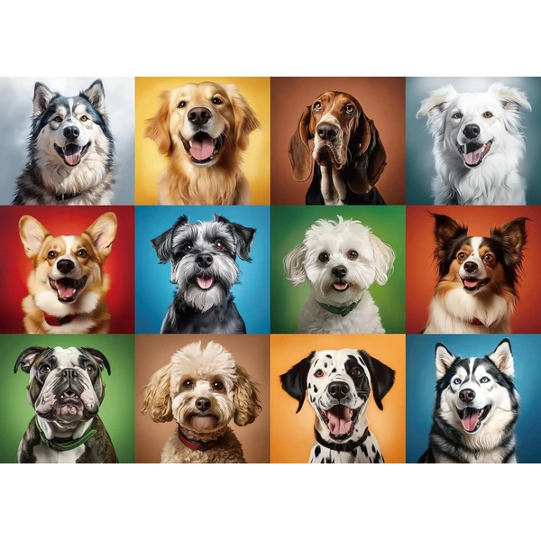
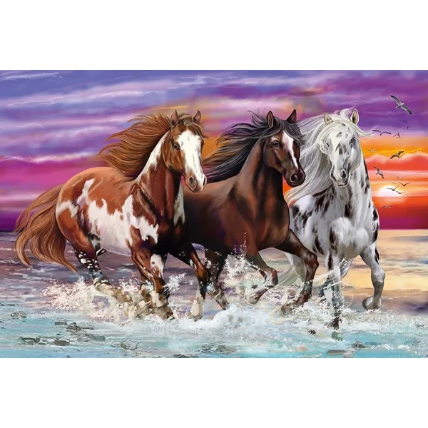
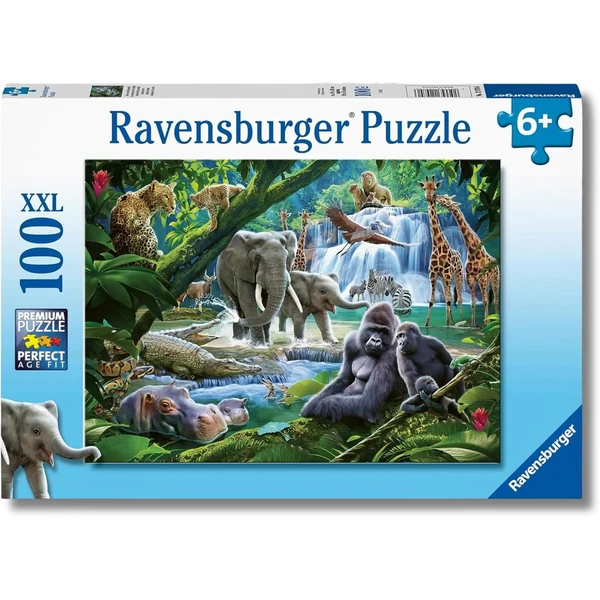
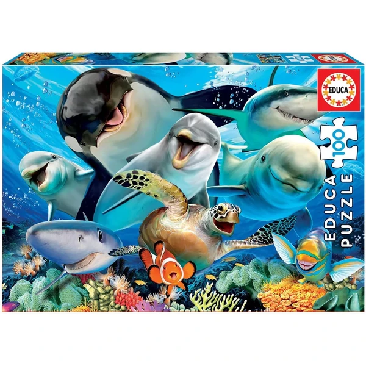

Los animales son, con diferencia, la temática favorita de los niños a la hora de elegir un puzzle: son imágenes reconocibles, con colores vivos y formas fáciles de identificar incluso en los formatos con menos piezas. Aquí tienes nuestra selección general y, más abajo, un repaso por especie para acertar con el animal favorito de cada peque.
Selección variada de animales en una sola caja, ideal si todavía no tienes claro cuál es el favorito.

Africa Ver en Amazon →Uno de los animales más buscados en formato puzzle, con ilustraciones realistas o de estilo más infantil según la edad.

Gato Ver en Amazon →Razas variadas y escenas familiares, uno de los temas más socorridos como regalo infantil.

Perros Ver en Amazon →Especialmente popular entre los más aficionados a la equitación y el mundo rural.

Caballos Ver en Amazon →Más allá de los animales más buscados, hay una gran variedad de temáticas con su propio público: mariposas y otros insectos de colores llamativos, lobos y grandes felinos para quienes prefieren la fauna salvaje, animales de granja como vacas y ovejas, elefantes y otros gigantes de la sabana, o escenas de fondo marino con peces y corales.

Selva Ver en Amazon →
Mar Ver en Amazon →Muchos de estos diseños también están disponibles en formato de madera, más resistente y con piezas de encaje más grandes para los más pequeños. Puedes verlos en nuestra guía de puzzles de madera.